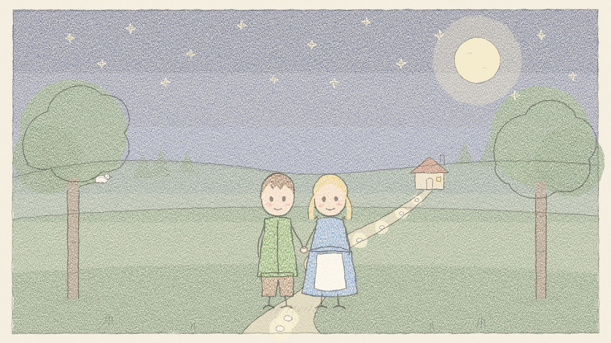

Hansel et Gretel : histoire du soir pour enfants, notre version (d'après les frères Grimm)
Hansel et Gretel, notre version pour le soir, d'après les frères Grimm. Deux enfants perdus, une maison de pain et de gâteau, et une idée maligne pour rentrer. Personne n'a de mal. Dans cet épisode : - Des cailloux qui brillent sous la lune - Des fenêtres en sucre et une sorcière grincheuse - Un gentil canard et le chemin du retour Sources : Hänsel and Grethel, frères Grimm, traduit par Margaret Hunt (Wikisource) Musique : Kevin MacLeod (incompetech.com), CC BY 4.0 De douces histoires pour le soir et l'heure du conte, racontées lentement par une voix chaleureuse. luongnv.com/podcast/stories
Écouter sur Once Upon a Time Show Télécharger le MP3 Transcription
Également disponible en : English, Tiếng Việt
D’après Hänsel and Grethel, de Jacob and Wilhelm Grimm, translated by Margaret Raine Hunt